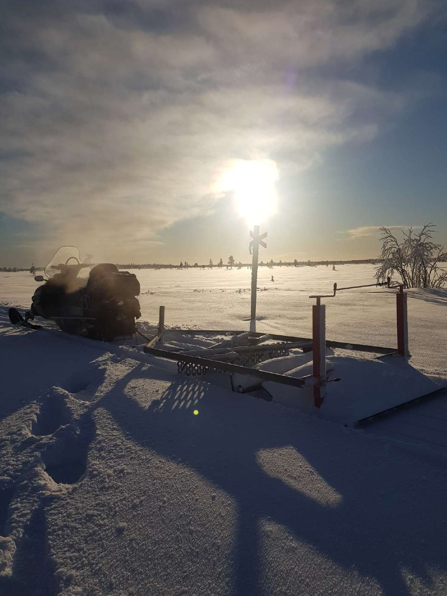
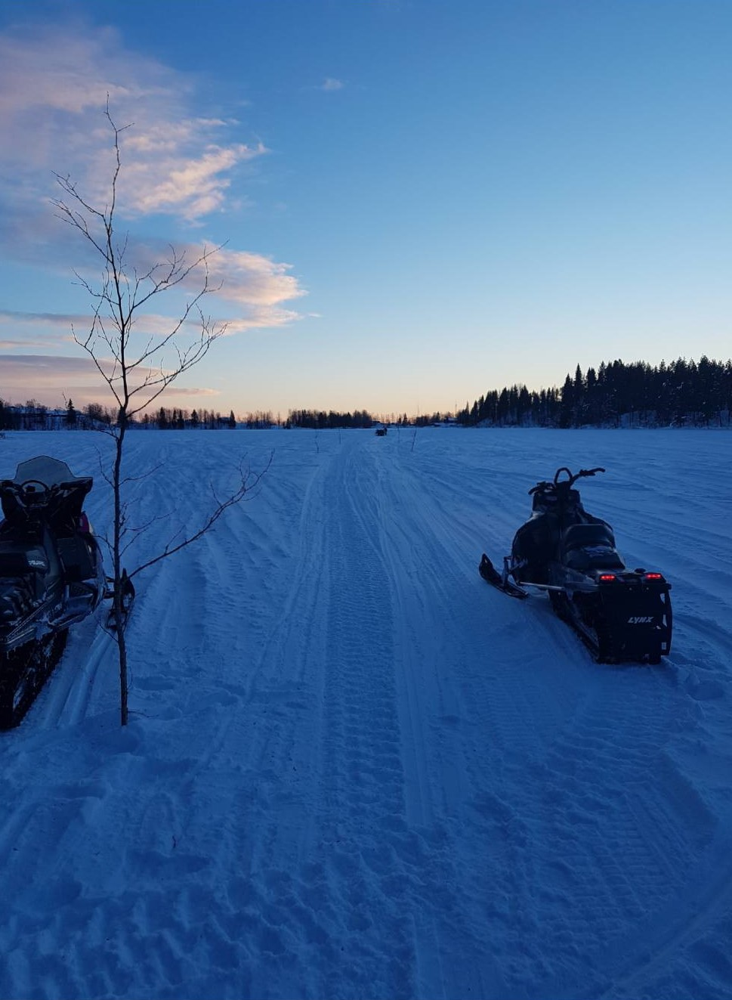
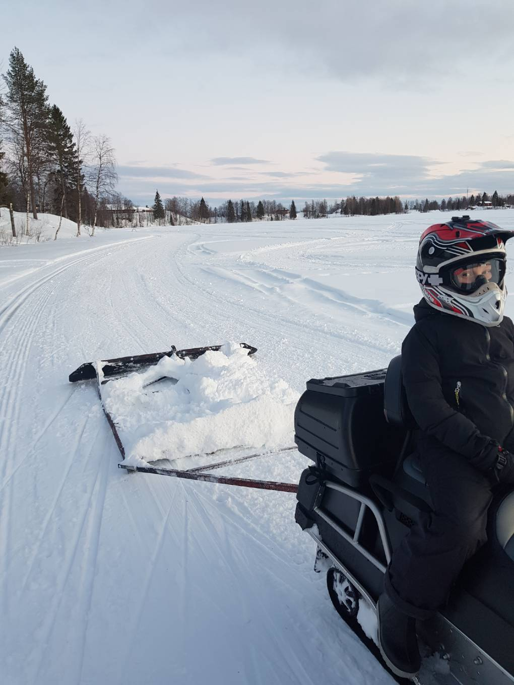

Vinter/Vår
Ledsladdning
Under vintern går mesta dels av arbetstiden till att sladda skoterlederna. Ca 100km led sladdas med hjälp av snöskoter och sladd.
Ruska vattendrag
Efter våra ledsträckor finns det många vattedrag, flera av dessa måste ruskas för att trafiken ska kunna passera på säkraste sätt.
Skidspår
Under vinter bistår skoterklubben med att sladda skatespår till Kangos Idrottsklubb. Detta görs även ideellt och för att det ska finnas aktiviteter i byn.


